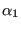

Keyword type: step
This procedure is used to perform a crack propagation analysis. Prerequisite is the performance of a static calculation for the uncracked structure, which may consist of several steps. The results of this calculation must be stored in a frd-file. The crack propagation calculation must be done in a separate input deck. The model in this input deck should contain a triangulation of the crack(s) with S3 shell elements. It may also contain the mesh of the uncracked structure.
There are two required parameters INPUT and MATERIAL and one optional parameter LENGTH. With the parameter INPUT the frd-file with the uncracked results is referenced. It should contain stresses and may, in addition, contain temperatures for all steps of the uncracked calculation. The parameter MATERIAL refers to the material definition containing the crack propagation parameters. Right now, a Paris-type law with threshold and critical corrections is available, cf. Section 6.9.25.
The LENGTH parameter indicates how the crack length is to be calculated:
Since the jobname.frd file is created from scratch in every *CRACK PROPAGATION step (this is because every *CRACK PROPAGATION step changes the number of nodes and elements in the model due to the growing crack) it does not make sense to have more than one such step in an input deck. In fact, any other step is senseless and ideally the *CRACK PROPAGATION step should be the only step in the deck. If the user defines more than one *CRACK PROPAGATION step in his/her input deck, the jobname.frd file will only contain the output requested, if any, from the last *CRACK PROPAGATION step. This rule also applies to restart calculations.
First line:
Second line:
Example: *MATERIAL,NAME=CRACK *USER MATERIAL,CONSTANTS=8 1.E-4,772.86,3.1,10.,177.09,10.,3162.,0.5 ... *STEP,INC=50 *CRACK PROPAGATION,INPUT=master.frd,MATERIAL=CRACK,LENGTH=CUMULATIVE 0.05,10.
defines a crack propagation calculation. The results of the uncracked calculation are stored in master.frd. The propagation data are defined underneath the material definition for material CRACK. The crack length calculation is based on a sum of the initial crack length and the subsequent crack increments. The maximum crack length increment ist 0.05 length units, the maximum deflection angle per increment is 10. The maximum number of increments is defined using the INC parameter on the *STEP card.
Example files: crackIIcum, crackIIint, crackIIprin.